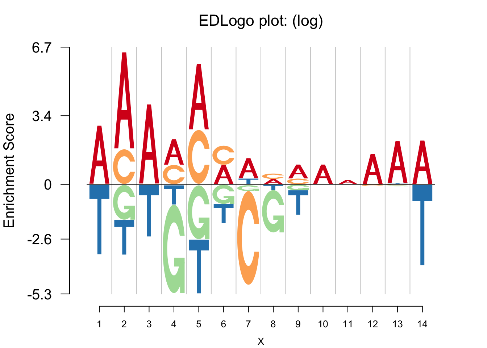

Last updated: 2017-09-21
Code version: 56a94be
Using the negative Logolas plot repreentation, the user can get a consensus sequence of the logos along the positions. For the DNA sequence data, the consensus sequence is usually coded by the IUPAC code, in which the bases are represented by the first letters of their names: [G]uanine, [C]ytosine, [A]denine, and [T]hymine (check the getIUPAC in the atSNP package). For the amino acid sequence, the Prosite syntax is commonly used.
Based on the logo heights from the Negative Logolas plot, we develop an algorithm to generate a consensus sequence, which can be used for prediction purposes to check if a given sequence matches with the underlying PWM matrix. Unlike the IUPAC and the Prosite nomenclatures that only decide on the consensus sequence using logo enrichment, the Logolas nomenclature uses both enrichment and depletion of the symbols.
In the Logolas nomenclature, we use uppercase of the symbol to depict enrichment and lowercase of a symbol to depict depletion of that symbol. We present an example below to demonstrate how Logolas nomenclature can be used.
Compared with traditional way to get the consensus sequence for nucleotide sequence, for example the GetIUPACSequence function from the atSNP package, our new method gives a better representation of the sequence.
library(Logolas)
library(atSNP)
pwm=matrix(c(0.8,0.1,0.1,0,0.9,0.1,0,0,0.9,0.05,0.05,0,0.5,0.4,0,0.1,0.6,0.4,0,0,0.4,0.4,0.1,0.1,0.5,0,0.2,0.3,0.35,0.35,0.06,0.24,0.4,0.3,0.2,0.1,0.4,0.2,0.2,0.2,0.28,0.24,0.24,0.24,0.5,0.16,0.17,0.17,0.6,0.13,0.13,0.14,0.7,0.15,0.15,0),nrow = 4,byrow = F)
rownames(pwm)=c('A','C','G','T')
colnames(pwm)=1:ncol(pwm)
GetIUPACSequence(t(pwm))[1] "AAAMMMWMMAAAAA"GetConsensusSeq(pwm)[1] "A A A (AC) (AC) (AC) c g N N N A A (At)"The way we give the consensus sequence is intuitive if we have a look at the logo plot.
color_profile=list("type" = "per_row","col" = RColorBrewer::brewer.pal(4,name ="Spectral"))
logomaker(pwm,color_profile = color_profile,frame_width = 1)
nlogomaker(pwm,logoheight = 'log',color_profile = color_profile,frame_width = 1)
sessionInfo()R version 3.3.3 (2017-03-06)
Platform: x86_64-apple-darwin13.4.0 (64-bit)
Running under: macOS Sierra 10.12.5
locale:
[1] en_US.UTF-8/en_US.UTF-8/en_US.UTF-8/C/en_US.UTF-8/en_US.UTF-8
attached base packages:
[1] grid stats4 parallel stats graphics grDevices utils
[8] datasets methods base
other attached packages:
[1] atSNP_1.0 motifStack_1.18.0 Biostrings_2.42.1
[4] XVector_0.14.1 ade4_1.7-6 MotIV_1.30.0
[7] grImport_0.9-0 XML_3.98-1.9 GenomicRanges_1.26.4
[10] GenomeInfoDb_1.10.3 IRanges_2.8.2 S4Vectors_0.12.2
[13] BiocGenerics_0.20.0 doParallel_1.0.10 iterators_1.0.8
[16] foreach_1.4.3 data.table_1.10.4 Rcpp_0.12.12
[19] Logolas_1.1.2
loaded via a namespace (and not attached):
[1] RColorBrewer_1.1-2 plyr_1.8.4
[3] git2r_0.18.0 bitops_1.0-6
[5] tools_3.3.3 zlibbioc_1.20.0
[7] digest_0.6.12 evaluate_0.10
[9] lattice_0.20-34 BSgenome_1.42.0
[11] Matrix_1.2-10 yaml_2.1.14
[13] LaplacesDemon_16.0.1 seqLogo_1.40.0
[15] rtracklayer_1.34.2 stringr_1.2.0
[17] knitr_1.16 rprojroot_1.2
[19] Biobase_2.34.0 BiocParallel_1.8.2
[21] rGADEM_2.22.0 rmarkdown_1.6
[23] magrittr_1.5 scales_0.4.1
[25] GenomicAlignments_1.10.1 Rsamtools_1.26.2
[27] backports_1.0.5 codetools_0.2-15
[29] htmltools_0.3.6 SummarizedExperiment_1.4.0
[31] colorspace_1.3-2 stringi_1.1.5
[33] munsell_0.4.3 RCurl_1.95-4.8
[35] SQUAREM_2016.8-2 This webpage has been developed using RStudio's R Markdown and John D Blischak's workflowr package.